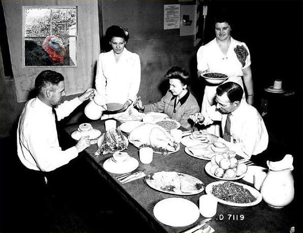

Harrold walks in at a bad moment
-Honey, I forgot my briefcase
-oh, Harrold! You suprised me!
-Ah here it is. Whats that smell?
-What? Oh, I was just cooking something, thats all
-No, thats not it, are you baking? Why is the oven on?
-Uh, yes Harold I was baking a pie for you, so you could eat it after work!
-You look sweaty, no you look wet, what is that?
-He, he, nothing Harold, I just took a shower
-Turkeys dont shower!
-(Harold rips off her robe)
-Are you... basting yourself?!??!
-Look Harold, I didnt want you to find me this way
-You're trying to bake yourself aren't you?!
-Listen... Harold, the kids are off at school, and Im here alone all day, whats
the point of me living anymore? (starts crying)
-(Harold slaps her)
-You fucking bitch! Leave me here alone will you? Fine, kill yourself, bake
yourself all you want. Id love to get home to find you dead. At least Id have
a good meal once before you're gone.
